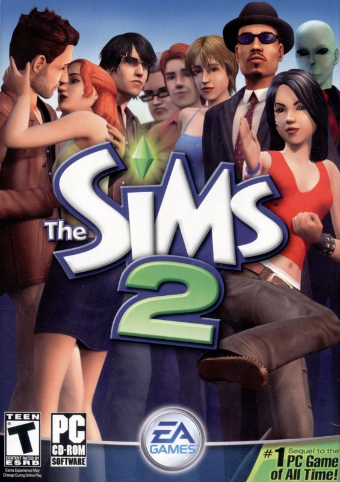

Odin Recipes
The goal of this site is to demostrate skills in html and css with three recipes from allrecipes. The skills covered in this website include margins/padding, the box model, images, links & etc.
About Me
I started to take interest in html and css when I took an intro to web development class in college. Now I am going through the Odin Project in order to expand my skills. I am the oldest of five children and some of my hobbies inlcude reading books and playing video games. Here are some of the games that I like to play:

